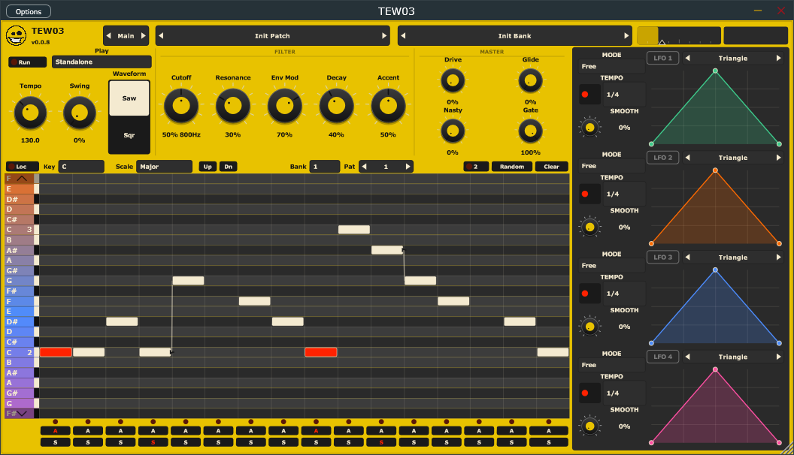

TEW03
A monophonic acid synth. Classic 303 squelch (saw/square, resonant filter, accent, slide, drive) plus extra nastiness.
The main page is the synth, a 3×12 step sequencer (16 or 32 steps, accent and slide, key lock), and two drawn LFOs you can drop on any knob. Patterns play the voice and go out as MIDI.
Run modes: Keyboard (play from MIDI), Standalone (loop the selected slot; the DAW UI hides this), and Pattern (hold a key to trigger a pattern).
Effects are chorus, compressor, delay, distortion, EQ, filter, flanger, phaser, and reverb — click to add, drag to reorder, all off until you turn them on. A five-band parametric EQ sits before and after the effects, with the spectrum behind the curve.
